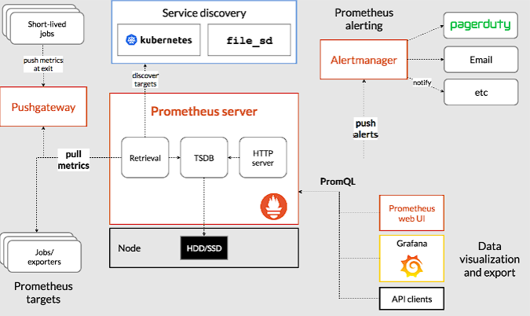
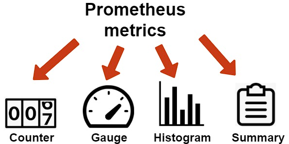
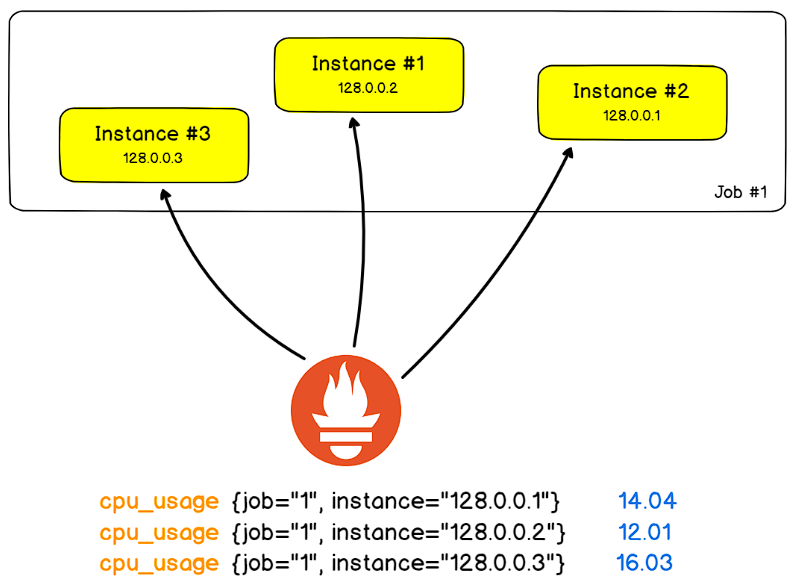
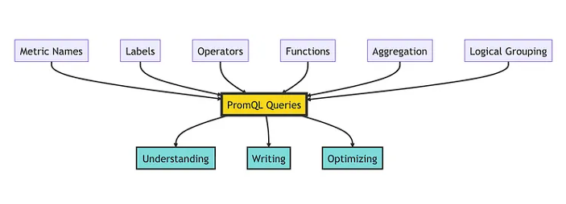
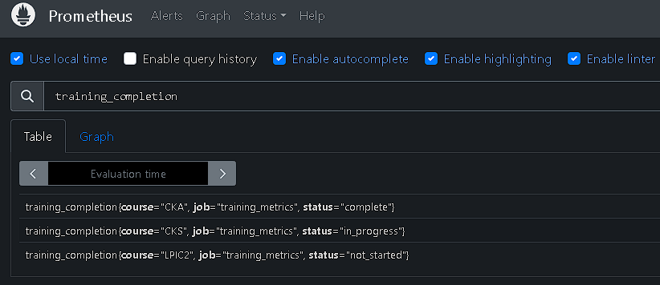
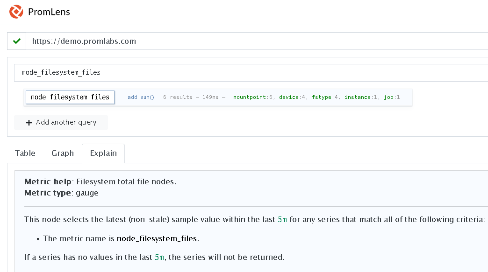
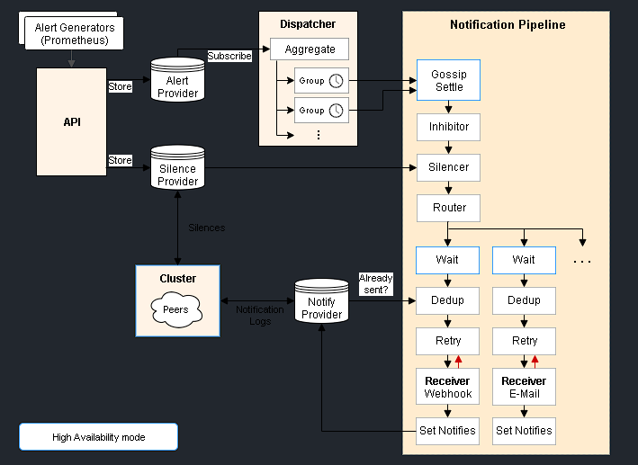

Kubernetes Observability
Project for learning about Kubernetes observability.
Explore the docs »
Project Page
-
Report Bug
-
Request Feature
Table of Contents
About The Project
This project is for learning about kubernetes observability.
Built With
Getting Started
This project is for getting started with kubernetes observability tools and best practices.
Some tools for learning:
- Prometheus
- Alertmanager
- Grafana
- Grafana Loki
- Grafana Tempo
- Grafana Alloy
Prerequisites
- Linux System Up
- Cluster Kubernetes Up
- Git
Installation
Clone the repo
git clone https://github.com/marcossilvestrini/kubernetes-observability.git
cd kubernetes-observability || exit
Usage
I publish some exemples for use in this repository.
Roadmap
- Create repositoty
- Prometheus
- Alertmanager
- Grafana
- Grafana Loki
- Grafana Tempo
- Grafana Alloy
- Others tools
See the open issues for a full list of proposed features (and known issues).
Prometheus

Prometheus is an open-source systems monitoring and alerting toolkit originally built at SoundCloud.
Since its inception in 2012, many companies and organizations have adopted Prometheus, and the project has a very active developer and user community.
The Prometheus ecosystem consists of multiple components, many of which are optional:
- the main Prometheus server which scrapes and stores time series data
- client libraries for instrumenting application code
- a push gateway for supporting short-lived jobs
- special-purpose exporters for services like HAProxy, StatsD, Graphite, etc.
- an alertmanager to handle alerts
- various support tools
For more information about Prometheus access official documentation:
https://prometheus.io/docs/introduction/overview/
Metric names and labels
Example metric name:
<metric name>{<label name>=<label value>, ...}
Example metric name with labels:
api_http_requests_total{method="POST", handler="/messages"}
Metrics Types

Counter – accepts and stores only those values that will increase with time.
Gauge – stores the values that can take different values, that can both increase and decrease.
Histogram – samples observations (usually things like request durations or response sizes) and counts them in configurable buckets. It also provides a sum of all observed values, allowing you to calculate averages.
Summary – histogram with a more detailed data representation using additional statistics (quantiles).
Jobs and Instances

In Prometheus terms, an endpoint you can scrape is called an instance, usually corresponding to a single process.
A collection of instances with the same purpose, a process replicated for scalability or reliability for example, is called a job.
Prometheus remote-write Specification
The remote write protocol is designed to make it possible to reliably propagate samples in real-time from a sender to a receiver, without loss.
- a "Sender" is something that sends Prometheus Remote Write data.
- a "Receiver" is something that receives Prometheus Remote Write data.
- a "Sample" is a pair of (timestamp, value).
- a "Label" is a pair of (key, value).
- a "Series" is a list of samples, identified by a unique set of labels.
Compatible Senders and Receivers
The spec is intended to describe how the following components interact:
- Prometheus (as both a "sender" and a "receiver")
- Avalanche (as a "sender") - A Load Testing Tool Prometheus Metrics.
- Cortex (as a "receiver")
- Elastic Agent (as a "receiver")
- Grafana Agent (as both a "sender" and a "receiver")
- GreptimeDB (as a "receiver")
- InfluxData’s Telegraf agent. (as a sender, and as a receiver)
- M3 (as a "receiver")
- Mimir (as a "receiver")
- OpenTelemetry Collector (as a "sender" and eventually as a "receiver")
- Thanos (as a "receiver")
- Vector (as a "sender" and a "receiver")
- VictoriaMetrics (as a "receiver")
PromQL

Prometheus provides a functional query language called PromQL (Prometheus Query Language) that lets the user select and aggregate time series data in real time. The result of an expression can either be shown as a graph, viewed as tabular data in Prometheus's expression browser, or consumed by external systems via the HTTP API.
Install Prometheus
# Download files - https://prometheus.io/download/
wget https://github.com/prometheus/prometheus/releases/download/v2.51.2/prometheus-2.51.2.linux-amd64.tar.gz
# Extract files
tar xvfz prometheus-*.tar.gz
rm prometheus-*.tar.gz
cd prometheus-*
# Check version
./prometheus --version
Configure Prometheus
See my configuration file prometheus.yaml
vim prometheus.yaml
# my global config
global:
scrape_interval: 15s # Set the scrape interval to every 15 seconds. Default is every 1 minute.
evaluation_interval: 15s # Evaluate rules every 15 seconds. The default is every 1 minute.
# scrape_timeout is set to the global default (10s).
# Alertmanager configuration
alerting:
alertmanagers:
- static_configs:
- targets:
# - alertmanager:9093
# Load rules once and periodically evaluate them according to the global 'evaluation_interval'.
rule_files:
# - "first_rules.yml"
# - "second_rules.yml"
# A scrape configuration containing exactly one endpoint to scrape:
# Here it's Prometheus itself.
scrape_configs:
# The job name is added as a label `job=<job_name>` to any timeseries scraped from this config.
- job_name: "prometheus"
# metrics_path defaults to '/metrics'
# scheme defaults to 'http'.
static_configs:
- targets: ["localhost:9090"]
Start Prometheus
# Start
./prometheus --config.file=prometheus.yml
# Start with PM2 - npm install pm2@latest -g
pm2 start prometheus --name prometheus-server -- --config.file=prometheus.yml
Important Endpoints
http://localhost:9090 # all endpoints
http://localhost:9090/graph # PromQL expressions
http://localhost:9090/metrics # metrics
http://localhost:9090/targets # scrape_configs jobs
Using the expression browser
You can use the expression in Table or Graph mode.
Open the page http://localhost:9090
# Check all http metrics
promhttp_metric_handler_requests_total
# Check http metrics with http status code 200
promhttp_metric_handler_requests_total{code="200"}
# Count http metrics
count(promhttp_metric_handler_requests_total)
# Rate function
rate(promhttp_metric_handler_requests_total{code="200"}[1m])
Prometheus Exporters
An exporter is a binary running alongside the application you want to obtain metrics from.
The exporter exposes Prometheus metrics, commonly by converting metrics that are exposed in a non-Prometheus format into a format that Prometheus supports.
Node Exporter
The Prometheus Node Exporter exposes a wide variety of hardware- and kernel-related metrics.
Instal Node Exporter
# Download - https://prometheus.io/download#node_exporter
wget https://github.com/prometheus/node_exporter/releases/download/v1.7.0/node_exporter-1.7.0.linux-amd64.tar.gz
# Extract
tar xvfz node_exporter-*.*-amd64.tar.gz
cd node_exporter-*.*-amd64
Start Node Exporter
# Start
./node_exporter
# Start with PM2 - npm install pm2@latest -g
pm2 start node_exporter --name node_exporter
Endpoints Node Exporter
# Access metrics
http://localhost:9100/metrics
Configure Node Exporter
For enable scrap for node exporter, you can configure prometheus.
# Edit prometheus file and add job node
vim prometheus.yaml
...
scrape_configs:
- job_name: node
static_configs:
- targets: ['localhost:9100']
...
Restart prometheus service for apply new job.
PushGateway
The Prometheus Pushgateway is an intermediary service which allows ephemeral and batch jobs to expose their metrics to Prometheus.
Since these kinds of jobs may not exist long enough to be scraped, they can instead push their metrics to a Pushgateway.
The Pushgateway then acts as a temporary metrics store which Prometheus scrapes.
This setup is particularly useful for capturing the outcome of a job that does not run continuously, such as a batch job in a CI system, or a backup script running at a scheduled time.
It simplifies monitoring these kinds of jobs without needing to run a long-lived Prometheus instance that might outlive the jobs themselves.
Install PushGateway
# Download
wget -q https://github.com/prometheus/pushgateway/releases/download/v1.8.0/pushgateway-1.8.0.linux-amd64.tar.gz
# Extract
tar xvfz pushgateway-*.*-amd64.tar.gz
cd pushgateway-*.*-amd64
# Start
# Start with PM2 - npm install pm2@latest -g
pm2 start pushgateway --name pushgateway -- --web.listen-address "192.168.0.130:9091"
Configure PushGateway
# Edit prometheus file and add job pushgateway
vim prometheus.yaml
scrape_configs:
- job_name: 'pushgateway'
honor_labels: true
static_configs:
- targets: ['192.168.0.130:9091'] # prometheus server for scraping
# Restart prometheus
# restart with pm2
pm2 restart prometheus-server
Create metrics for test pushgateway
echo 'training_completion{course="CKA", status="complete"} 1' > metrics.txt
echo 'training_completion{course="CKS", status="in_progress"} 0.5' >> metrics.txt
echo 'training_completion{course="LPIC2", status="not_started"} 0' >> metrics.txt
curl --data-binary @metrics.txt http://192.168.0.130:9091/metrics/job/training_metrics
Endpoints Pushgateway
# Access metrics
http://localhost:9091
Use PromQL for find metrics pushgateway target

Promlens
Install Promlens
echo "Downloading Promlens..."
wget -q https://github.com/prometheus/promlens/releases/download/v0.3.0/promlens-0.3.0.linux-amd64.tar.gz
echo "Extracting Promlens..."
tar xvfz promlens-*.*-amd64.tar.gz
rm promlens-*.*-amd64.tar.gz
cd promlens-*.*-amd64 || exit
echo "Starting Promlens..."
pm2 start promlens --name promlens -- --web.listen-address "192.168.0.130:8081"
cd || exit
Promlens endpoints
# Access query builder
http://192.168.0.130:8081

Alertmanager

For more information about Alertmanager access official documentation:
https://github.com/prometheus/alertmanager
Grafana
Grafana Loki
Grafana Tempo
Grafana Alloy
Contributing
Contributions are what make the open source community such an amazing place to learn, inspire, and create. Any contributions you make are greatly appreciated.
If you have a suggestion that would make this better, please fork the repo and create a pull request. You can also simply open an issue with the tag "enhancement". Don't forget to give the project a star! Thanks again!
- Fork the Project
- Create your Feature Branch (
git checkout -b feature/AmazingFeature) - Commit your Changes (
git commit -m 'Add some AmazingFeature') - Push to the Branch (
git push origin feature/AmazingFeature) - Open a Pull Request
License
Distributed under the MIT License. See LICENSE for more information.
Contact
- Marcos Silvestrini - @mrsilvestrini
- marcos.silvestrini@gmail.com
Project Link: https://github.com/marcossilvestrini/kubernetes-observability